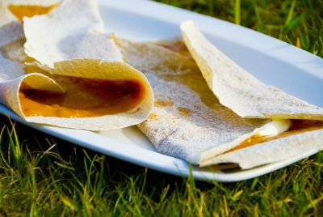

Møsbrømlefse

Beskrivelse
Møsbrømlefse er tradisjonsmat fra Salten der denne kaloribomben spises til middag. Den finnes i flere varianter men denne varianen er fra Valnesfjord. Dette er en stor oppskrift som gir 40 lefser og nok møsbrøm til cirka 15. Lefsene kan lages i forkant og fryses, så kan du tine så mange du skal servere.
Ingredienser
Møsbrømlefse
- 1 l kulturmelk
- 1 dl vann
- 2 ss hornsalt
- 2 ss lys sirup
- 2 ss smeltet smør
- 250 g rugmel, fint
- 250 g grov sammalt hvete
- 700 g hvetemel
- litt byggmel til å bake ut med
Møsbrøm
- 1 l melk, evt. litt fløte
- 500 g brunost av valgfri type, gjerne gamle rester
- 6 ss sukker
- 0.5 ts salt
- 3 ss hvetemel eller maisennamel
Tilbehør
Oppskrift
Møsbrømlefse
- Bland sammen ingrediensene til lefsene i en kjøkkenmaskin. Deigen skal være litt klissete.
- Del deigen i 40 emner, rull til boller og trykk dem litt flate. Ha mel imellom og legg plast over emnene.
- Kjevle ut til tynne, runde lefser med byggmel. Stek lefsene på middels varme, lett på begge sider.
- Legg lefsene oppå hverandre i et klede, så de ikke blir tørre.
Møsbrøm
- Til møsbrømmen raspes all osten fint og røres ut i melken under oppkoking. Pass på at du ikke bruker for varm plate.
- Når osten er smeltet, ristes melet ut i kaldt vann. Bruk et glass med lokk og rist til det er klumpfritt.
- Rør jevningen ned i den varme melken. Kok opp møsbrømmen, mens det røres hele tiden.
- Rør i sukker og salt. La den småkoke noen minutter så den tykner. Møsbrømmen skal være omtrent like tykk som vaniljesaus.
Når det er klart for servering smører man et godt lag med møsbrøm over hele lefsa, og har en klatt med rømme og smør på midten av lefsa. Noen bruker også sirup. Deretter stekes den på takke, brettes sammen og spises varm.
Tradisjonelt skal den spises med fingrene, men i dag er det også lov å bruke kniv og gaffel.